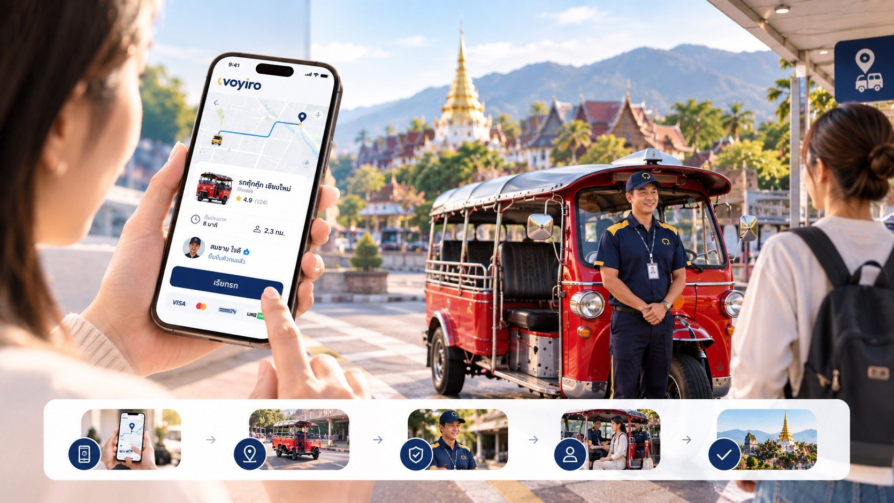

ယုံကြည်ရသော ဒေသခံယာဉ်ဖြင့် မြို့တစ်မြို့လုံး လှည့်လည်ပါ
ယာဉ်မောင်းတိုင်းသည် လိုင်စင်ရ အများသုံးယာဉ်မောင်းဖြစ်သည်။ မစီးမီ ဈေးနှုန်းရှင်းလင်းပြီး ဈေးဆစ်စရာမလို၊ အက်ပ်ထည့်စရာလည်း မလိုပါ။
အဆင်အပြေဆုံး နည်းလမ်းကို ရွေးပါ
QR စကင်ဖတ်ပါ
ဟိုတယ်ကောင်တာ၊ စားသောက်ဆိုင်၊ ခရီးသွားနေရာ သို့မဟုတ် ယာဉ်ဘေးရှိ QR ကို ဖုန်းကင်မရာဖွင့်ပြီး ချက်ချင်း စကင်ဖတ်နိုင်သည်
LINE
LINE [အချက်အလက် စောင့်ဆိုင်းဆဲ: LINE OA ID] ကို သူငယ်ချင်းထည့်ပြီး ယာဉ်ခေါ်မီနူးကို နှိပ်ပါ။ ထိုင်းလူမျိုးနှင့် ခရီးသွားများ နှစ်မျိုးလုံး အသုံးပြုနိုင်သည်
ဟိုတယ်က ခေါ်ပေးခြင်း
ဟိုတယ် သို့မဟုတ် ပါတနာဆိုင်ရှိ ဝန်ထမ်းကို ပြောပါ။ ဝန်ထမ်းက ယာဉ်ခေါ်ပေးပြီး အသေးစိတ်ကို သင့်ထံ ပို့ပေးမည်
ဝက်ဘ်ဆိုက်
ဝက်ဘ်မှ ယာဉ်ခေါ်ရန် [အချက်အလက် စောင့်ဆိုင်းဆဲ: ลิงก์หน้าเรียกรถบนเว็บ เช่น voyiro.com/go และวันที่เปิดใช้]
ကြိုရမည့်နေရာနှင့် ချရမည့်နေရာ ထည့်ပါ
ဟိုတယ် QR မှ စကင်ဖတ်လျှင် စနစ်က ကြိုရမည့်နေရာကို အလိုအလျောက် ထည့်ပေးသည်
ယာဉ်အမျိုးအစား ရွေးပါ
ဈေးနှုန်း၊ ယာဉ်ရောက်မည့်အချိန်နှင့် ထိုင်ခုံအရေအတွက်ကို မြင်ရသည်
အတည်ပြုပြီး ယာဉ်ကို စောင့်ပါ
စနစ်က အနီးဆုံးယာဉ်မောင်းထံ ပို့ပေးပြီး ယာဉ်မောင်းတွင် လက်ခံရန် 15 စက္ကန့် အချိန်ရှိသည်
မစီးမီ ယာဉ်မောင်းကို စစ်ဆေးပါ
အမည်၊ ဓာတ်ပုံ၊ ယာဉ်နံပါတ်နှင့် လိုင်စင်နံပါတ်တို့ မျက်နှာပြင်နှင့် ကိုက်ညီမှု ကြည့်ပါ

ဈေးနှုန်းကို အကွာအဝေးဖြင့် တွက်ပြီး မခေါ်မီ အမြဲပြသသည်
လူများချိန် ဈေးမတက်ပါ။ မြင်ရသည့်ဈေးသည် ပေးရမည့်ဈေးဖြစ်ပြီး ဝှက်ထားသော ကုန်ကျစရိတ် မရှိပါ။
ဆောင်းတဲ
- ထိုင်ခုံ
- [အချက်အလက် စောင့်ဆိုင်းဆဲ: จำนวนที่นั่งสูงสุด]
- စတင်ကြေး
- [အချက်အလက် စောင့်ဆိုင်းဆဲ: บาท]
- ကီလိုမီတာတစ်ခုလျှင်
- [အချက်အလက် စောင့်ဆိုင်းဆဲ: บาท/กม.]
- တစ်စီးလုံးငှား
- [အချက်အလက် စောင့်ဆိုင်းဆဲ: ราคาเหมาคันต่อชั่วโมง]
- သင့်တော်သည်
- လူအုပ်စုကြီး၊ မြို့ပတ်လည်
တုတ်တုတ်
- ထိုင်ခုံ
- [အချက်အလက် စောင့်ဆိုင်းဆဲ: จำนวนที่นั่งสูงสุด]
- စတင်ကြေး
- [အချက်အလက် စောင့်ဆိုင်းဆဲ: บาท]
- ကီလိုမီတာတစ်ခုလျှင်
- [အချက်အလက် စောင့်ဆိုင်းဆဲ: บาท/กม.]
- စောင့်ချိန်ခ
- [အချက်အလက် စောင့်ဆိုင်းဆဲ: บาท/นาที หลังนาทีที่เท่าไร]
- သင့်တော်သည်
- မြို့တွင်း ခရီးတို
ဆိုက်ကား
- ထိုင်ခုံ
- [အချက်အလက် စောင့်ဆိုင်းဆဲ: จำนวนที่นั่งสูงสุด]
- စတင်ကြေး
- [အချက်အလက် စောင့်ဆိုင်းဆဲ: บาท]
- ကီလိုမီတာတစ်ခုလျှင်
- [အချက်အလက် စောင့်ဆိုင်းဆဲ: บาท/กม.]
- ဝန်ဆောင်မှုနယ်မြေ
- [အချက်အလက် စောင့်ဆိုင်းဆဲ: ขอบเขตพื้นที่ที่สามล้อวิ่งได้]
- သင့်တော်သည်
- မြို့ဟောင်းရပ်ကွက် လှည့်လည်ခြင်း
VIP ဗင်ကား
- ထိုင်ခုံ
- 9 ခုံ
- စတင်ကြေး
- 120 ဘတ်
- ကီလိုမီတာတစ်ခုလျှင်
- 18 ဘတ်
- လေဆိပ်
- [အချက်အလက် စောင့်ဆိုင်းဆဲ: ราคาเหมาสนามบิน–ตัวเมือง]
- သင့်တော်သည်
- မိသားစု၊ အုပ်စု၊ လေဆိပ်
ဗင်ကားနှုန်းထားသည် စမ်းသပ်စီမံကိန်း အစီအစဉ်ကို ကိုးကားထားသည် [အချက်အလက် စောင့်ဆိုင်းဆဲ: ยืนยันอัตราค่าโดยสารจริงทุกประเภท และเอกสารอ้างอิงอัตราที่กรมขนส่ง/สหกรณ์กำหนด]
ဒေသခံယာဉ်မောင်းနှင့် လည်ပတ်ပါ၊ တစ်စီးလျှင် ပုံသေဈေး
လမ်းကြောင်းကိုသိသော ယာဉ်မောင်းကို သမဝါယမက စီစဉ်ပေးသည်။ ဈေးနှုန်းသည် တစ်စီးလျှင် ပုံသေဖြစ်ပြီး လူဦးရေအလိုက် မတွက်ပါ။
[အချက်အလက် စောင့်ဆိုင်းဆဲ: ชื่อเส้นทาง]
- ကြာချိန် [အချက်အလက် စောင့်ဆိုင်းဆဲ: ชั่วโมง]
- တစ်စီးလျှင် အများဆုံး 3 ဦး
- ဈေးနှုန်း [အချက်အလက် စောင့်ဆိုင်းဆဲ: บาทต่อคัน]
- ဝင်ရောက်မည့်နေရာ [အချက်အလက် စောင့်ဆိုင်းဆဲ: รายการจุดแวะ]
[အချက်အလက် စောင့်ဆိုင်းဆဲ: ชื่อเส้นทาง]
- ကြာချိန် [အချက်အလက် စောင့်ဆိုင်းဆဲ: ชั่วโมง]
- တစ်စီးလျှင် အများဆုံး 3 ဦး
- ဈေးနှုန်း [အချက်အလက် စောင့်ဆိုင်းဆဲ: บาทต่อคัน]
- ဝင်ရောက်မည့်နေရာ [အချက်အလက် စောင့်ဆိုင်းဆဲ: รายการจุดแวะ]
[အချက်အလက် စောင့်ဆိုင်းဆဲ: ชื่อเส้นทาง]
- ကြာချိန် [အချက်အလက် စောင့်ဆိုင်းဆဲ: ชั่วโมง]
- အများဆုံး 9 ဦး
- ဈေးနှုန်း [အချက်အလက် စောင့်ဆိုင်းဆဲ: บาทต่อคัน รวมน้ำมันหรือไม่]
- ဝင်ရောက်မည့်နေရာ [အချက်အလက် စောင့်ဆိုင်းဆဲ: รายการจุดแวะ]
သင်အဆင်ပြေသလို ပေးချေပါ
ခရီးတိုင်းအတွက် အီလက်ထရောနစ်ပြေစာ ရရှိပြီး ခရီးစဉ်အသေးစိတ်စာမျက်နှာတွင် အခွန်ပြေစာ အပြည့်အစုံ တောင်းခံနိုင်သည်။
| ပေးချေနည်း | အသေးစိတ် |
|---|---|
| ငွေသား | ပြသထားသည့်ဈေးအတိုင်း ယာဉ်မောင်းကို ပေးပါ |
| PromptPay | မျက်နှာပြင်တွင် စကင်ဖတ်ပေးချေပြီး ငွေချက်ချင်းဝင်သည် |
| ခရက်ဒစ် / ဒက်ဘစ်ကတ် | Visa, Mastercard [အချက်အလက် စောင့်ဆိုင်းဆဲ: ผู้ให้บริการรับชำระเงิน (payment gateway)] |
| Alipay / WeChat Pay | တရုတ်ခရီးသွားများအတွက် |
| ဟိုတယ် / ကုမ္ပဏီ အကောင့် | ပါတနာက ဧည့်သည်ကိုယ်စား လစဉ် ငွေတောင်းခံလွှာ ပေးချေနိုင်သည် |
စီးသည်မှ ခရီးဆုံးအထိ ဘေးကင်းစေရန်
ယာဉ်ကို တိုက်ရိုက် ခြေရာခံ
မြေပုံပေါ်တွင် ယာဉ်တည်နေရာကို 20 စက္ကန့်တိုင်း အပ်ဒိတ်ဖြင့် မြင်ရသည်
ခရီးစဉ် မျှဝေခြင်း
မိသားစု သို့မဟုတ် ဟိုတယ်က ခြေရာခံနိုင်ရန် လင့်ခ်ပို့နိုင်သည်
အရေးပေါ်ခလုတ်
အကူအညီအဖွဲ့ကို ဆက်သွယ်ပြီး 191 သို့ ချက်ချင်း အကြောင်းကြားနိုင်သည် [အချက်အလက် စောင့်ဆိုင်းဆဲ: ยืนยันระบบ SOS และเวลาทำการทีมช่วยเหลือ]
အမှတ်ပေးခြင်းနှင့် ပြဿနာတင်ပြခြင်း
ခရီးတိုင်း ယာဉ်မောင်းကို အမှတ်ပေးနိုင်ပြီး ပစ္စည်းပျောက်ခြင်း သို့မဟုတ် တိုင်ကြားချက်ကို ပြေစာမှ တင်ပြနိုင်သည်
ခရီးသည်များ၏ မေးခွန်းများ
အက်ပ် ဒေါင်းလုဒ်လုပ်ရမလား
မလိုပါ။ QR စကင်ဖတ်ခြင်း သို့မဟုတ် LINE မှတစ်ဆင့် ချက်ချင်း ခေါ်နိုင်သည်။
လမ်းဘေးမှ ခေါ်တာထက် ဈေးပိုများသလား
ဈေးနှုန်းကို ကြေညာထားသော နှုန်းထားအတိုင်း တွက်ပြီး မခေါ်မီ အမြဲပြသသည်။ ပါတနာဝေစုသည် ယာဉ်ခထဲတွင် ပါဝင်ပြီးဖြစ်၍ ခရီးသည်ထံမှ ထပ်မကောက်ပါ။
ယာဉ်မောင်း တရားဝင်ကြောင်း ဘယ်လိုသိနိုင်သလဲ
မျက်နှာပြင်တွင် အများသုံးယာဉ် မောင်းနှင်ခွင့်လိုင်စင်နံပါတ်၊ ယာဉ်နံပါတ်နှင့် ဆက်စပ်သမဝါယမကို ပြသသည်။ စံနှုန်းအသေးစိတ်ကို ဘေးကင်းရေးနှင့် ဥပဒေ တွင် ကြည့်နိုင်သည်။
ပယ်ဖျက်နိုင်သလား၊ ကုန်ကျစရိတ် ရှိသလား
[အချက်အလက် စောင့်ဆိုင်းဆဲ: นโยบายการยกเลิก เช่น ยกเลิกฟรีภายในกี่นาที ค่ายกเลิกเท่าไร]
ယာဉ်ပေါ်တွင် ပစ္စည်းမေ့ကျန်ခဲ့လျှင် ဘာလုပ်ရမလဲ
ပြေစာမှ ပစ္စည်းပျောက်ကြောင်း နှိပ်ပြီး အကြောင်းကြားပါ။ စနစ်က ယာဉ်မောင်းနှင့် သမဝါယမကို ဆက်သွယ်ပေးမည် [အချက်အလက် စောင့်ဆိုင်းဆဲ: ค่าบริการส่งคืนของ ถ้ามี]
ဘယ်ဘာသာစကားတွေ ရနိုင်သလဲ
ထိုင်း၊ အင်္ဂလိပ်နှင့် တရုတ် [အချက်အလက် စောင့်ဆိုင်းဆဲ: ยืนยันภาษาที่รองรับในระบบจริง]
ကလေး သို့မဟုတ် အိမ်မွေးတိရစ္ဆာန်နှင့် စီးနိုင်သလား
[အချက်အလက် စောင့်ဆိုင်းဆဲ: นโยบายเด็ก ที่นั่งเด็ก และสัตว์เลี้ยง]